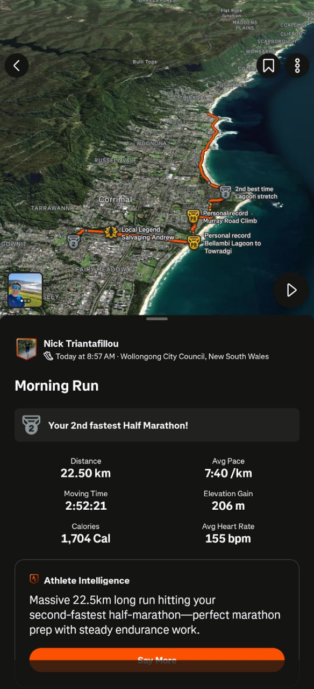

Live running coach
built on AWS — coached my lunch run today
Nick Triantafillou · AWS Wollongong Meetup · Aug 6 2026
The problem
Training for the Sydney Marathon.
I want a coach in my ear during runs — real-time cues on pace, HR, cadence, milestones, "push through it."
On my plan, with my HR ceiling, with rules I wrote.
What it does
- Watch pings Garmin → LiveTrack URL emailed
- System spots the email, spins up a coaching session
- Polls LiveTrack every 30s for fresh trackpoints
- Rules engine decides when to say something
- TTS to phone → Bluetooth headphones, mid-run
Architecture
AWS holds the coaching compute. Everything else is glue.
What AWS is doing
Task-per-session
- Container spawns when a LiveTrack email arrives
- Runs for the duration of the run
- Exits when Garmin closes the session
- Zero idle infrastructure.
~50 lines of CDK Python
class LiveCoachStack(Stack):
def __init__(self, scope, id, **kwargs):
super().__init__(scope, id, **kwargs)
repo = ecr.Repository(self, "Repo", repository_name="live-coach")
vpc = ec2.Vpc.from_lookup(self, "Vpc", is_default=True)
cluster = ecs.Cluster(self, "Cluster", vpc=vpc)
logs_grp = logs.LogGroup(self, "Logs")
ha_token = ssm.StringParameter.from_secure_string_parameter_attributes(
self, "HaToken", parameter_name="/live-coach/ha-token")
task = ecs.FargateTaskDefinition(self, "Task", cpu=256, memory_limit_mib=512)
task.add_container("orchestrator",
image=ecs.ContainerImage.from_ecr_repository(repo, "latest"),
logging=ecs.LogDrivers.aws_logs(log_group=logs_grp),
secrets={"HA_TOKEN": ecs.Secret.from_ssm_parameter(ha_token)})
Firing a session
import boto3
ecs = boto3.client("ecs")
ecs.run_task(
cluster="live-coach",
taskDefinition="live-coach",
launchType="FARGATE",
networkConfiguration={"awsvpcConfiguration": {
"subnets": [...], "assignPublicIp": "ENABLED"}},
overrides={"containerOverrides": [{
"name": "orchestrator",
"command": ["--url", livetrack_url],
"environment": [{"name": "HA_URL", "value": nabu_casa_url}],
}]},
)
One call. Container running ~15s later.
Today's lunch run
02:36 '30min mark: 3.0km, HR 97. Fuel + hydrate.'
02:45 'Cadence 158spm — lift the feet, target 165+'
02:53 '5km done. HR 141, keep it honest.'
02:59 'HR 165 for 1min+ — ease 30 seconds'
03:01 session inactive — exitingWhy bother
STRAVA · Fri Jul 31
22.50 km · 2:52:21 · 7:40/km
PR: Bellambi → Towradgi
PR: Murray Rd Climb
Local Legend: Salvaging Andrew
Coach fires for real runs like this. Longer runs = more cues, more value. Peak run 3 weeks away: 28 km.

Lessons
- Task-per-session works. Fargate cold-start is invisible against a 45min run.
- SSM > env vars for secrets. Injected at container start — token never in the image.
- CloudWatch is enough observability for this shape. One task = one log stream = whole run.
- AWS was easy. Hard problem was routing TTS past Spotify to Android's music stream.
Fin.
nickt.com.au/running
coach dashboard
nickt.com.au/talk.html
this deck
Questions?
scan the deck →